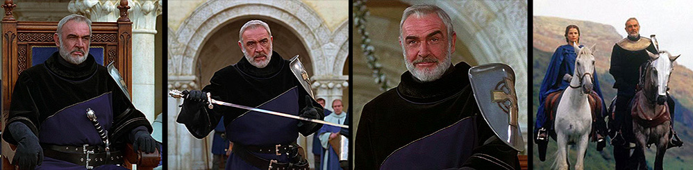
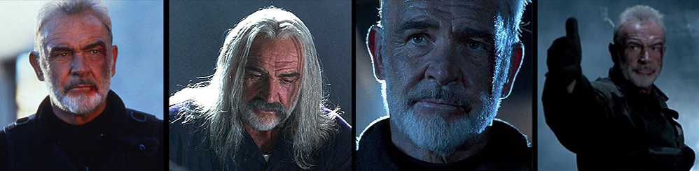
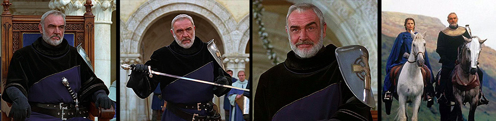
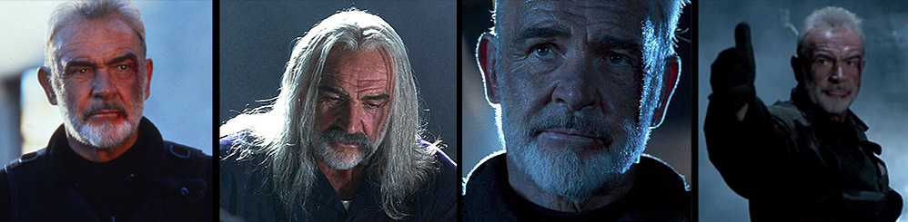
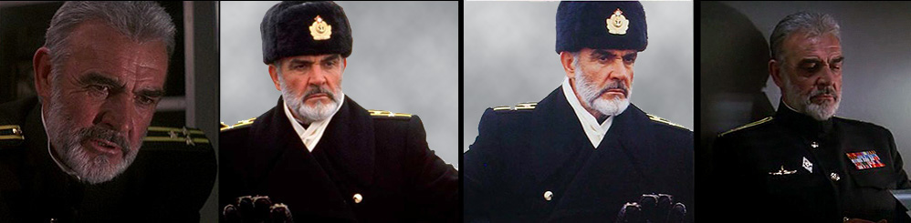
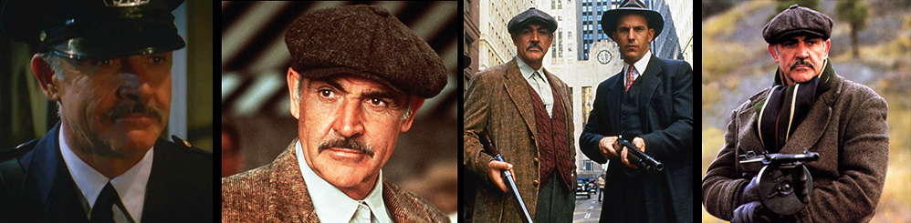
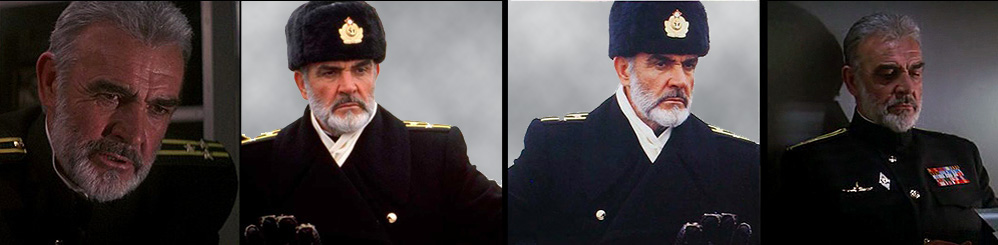
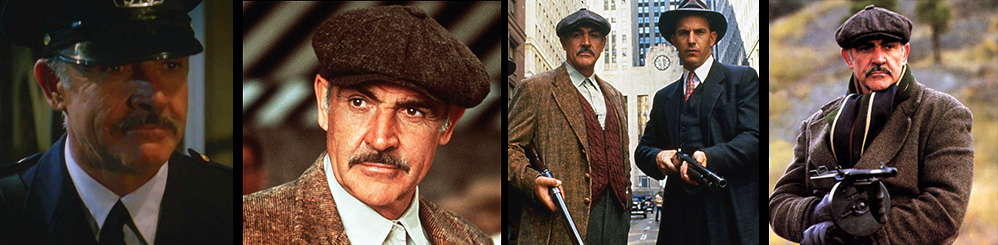

Sean Connery Filmography
- 2003 The League of Extraordinary Gentlemen
- 2001 Finding Forrester
- 1999 Entrapment
- 1998 Playing By Heart
- 1998 The Avengers
- 1996 The Rock
- 1996 Dragonheart
- 1995 Just Cause
- 1995 First Knight
- 1994 A Good Man In Africa
- 1993 Rising Sun
- 1992 Medicine Man
- 1991 Highlander II: Renegade Version
- 1990 The Hunt For Red October
- 1990 The Russia House
- 1989 Family Business
- 1989 Indiana Jones And The Last Crusade
- 1988 The Presidio
- 1987 The Untouchables
- 1986 Highlander
- 1986 The Name Of The Rose
- 1984 Sword of the Valiant
- 1983 Never Say Never Again
- 1982 Five Days One Summer
- 1982 Wrong Is Right
- 1981 Outland
- 1981 Time Bandits
- 1979 Cuba
- 1979 Meteor
- 1979 The Great Train Robbery
- 1977 A Bridge Too Far
- 1976 Robin And Marian
- 1976 The Next Man
- 1975 The Man Who Would Be King
- 1975 The Terrorists
- 1975 The Wind And The Lion
- 1974 Murder On The Orient Express
- 1974 Zardoz
- 1973 Offence
- 1971 Diamonds Are Forever
- 1971 The Anderson Tapes
- 1971 The Red Tent
- 1970 The Molly Maguires
- 1968 Shalako
- 1967 You Only Live Twice
- 1966 A Fine Madness
- 1965 The Hill
- 1965 Thunderball
- 1964 Goldfinger
- 1964 Marnie
- 1964 Woman Of Straw
- 1963 From Russia With Love
- 1962 Dr. No
- 1962 The Longest Day
- 1961 On the Fiddle
- 1961 The Frightened City
- 1959 Darby O'Gill and the Little People
- 1959 Hard Drivers
- 1959 Tarzan's Greatest Adventure
- 1958 Another Time, Another Place
- 1957 A Night to Remember
- 1957 Action of the Tiger
- 1957 No Road Back
- 1957 Time Lock
- 1954 Lilacs in the Spring


 



 


